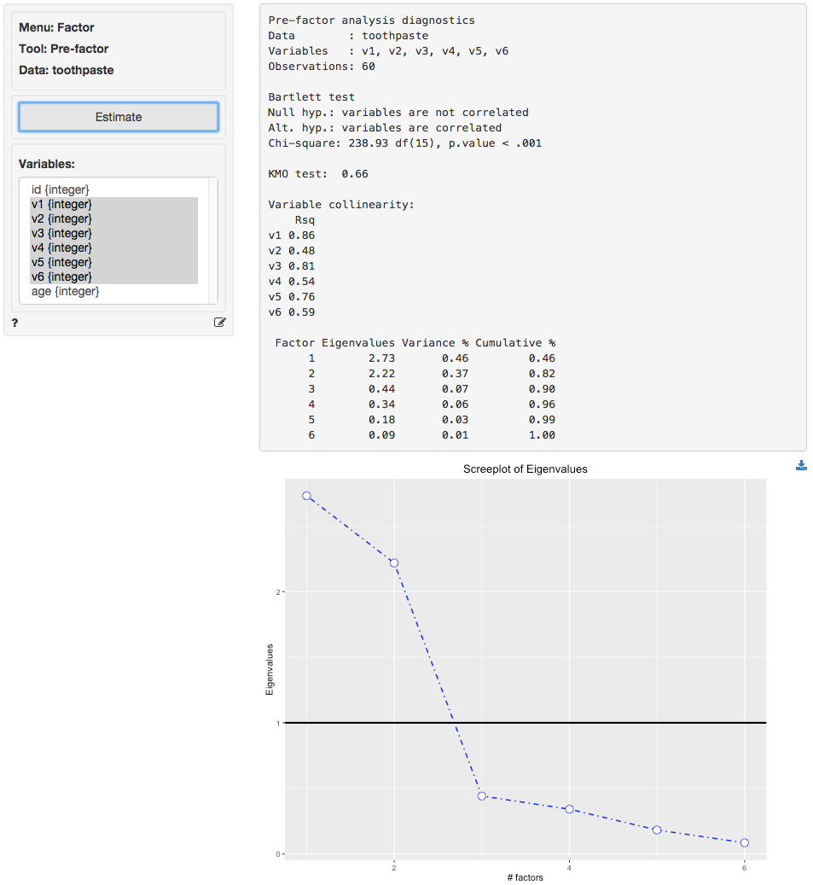

Factor > Pre-factor
Evaluate if data are appropriate for Factor analysis
The goal of Factor Analysis (and Principal Components Analysis) is to reduce the dimensionality of the data with minimal loss of information by identifying and using the structure in the correlation matrix of the variables included in the analysis. The researcher will often try to link the original variables to an underlying factor and provide a descriptive label for each.
Example: Toothpaste
Click the examples radio button on the Data > Manage page and click Load examples. Then choose the toothpaste data from the datasets dropdown. The dataset contains information from 60 consumers who were asked to respond to six questions to determine their attitudes towards toothpaste. The scores shown for variables v1-v6 indicate the level of agreement with statements on a 7-point scale where 1 = strongly disagree and 7 = strongly agree.
The first step in factor analysis is to determine if the data has the required characteristics. Data with limited or no correlation between the variables are not appropriate for factor analysis. We will use three criteria to test if the data are suitable for factor analysis: Bartlett, KMO, and Collinearity for each variable
The KMO and Bartlett test evaluate all available data together. A KMO value over 0.6 and a significance level for the Bartlett’s test below .05 suggest there is correlation in the data. Variable collinearity indicates how strongly a single variable is correlated with other variables. Values above .4 are considered appropriate.
As can be seen in the output from Factor > Pre-factor, Bartlett’s test statistic is large and significant (p-value very close to 0) as desired. The Kaiser-Meyer-Olkin (KMO) > 0.6 and thus acceptable. The variable collinearity values are all above 0.4 so all variables can be used in the analysis.

The next step is to determine the number of factors needed to capture the structure underlying the data. Factors that do not capture even as much variance as could be expected by chance are generally omitted from further consideration. These factors have eigenvalues < 1 in the output.
A further criteria that is often used to determine the number of factors is the scree-plot. This is a plot of the eigenvalues against the number of factors, in order of extraction. Often a break or elbow is visible in the plot. Factors up to and including this elbow are selected for further analysis if they all have eigenvalues above 1. A set of factors that explain > 70% of the variance in the original data is generally considered acceptable. The eigenvalues for all factors are shown above. Only two factors have eigenvalues above 1.
At first glance the Scree Plot of the Eigenvalues seems to suggest that 3 factors should be extracted (i.e., look for the elbow). However, because the value for the third factor is below one we will extract 2 factors.
The increase in cumulative % explained variance is relatively small going from 2 to 3 factors (i.e., from 82.49% to 89.85%). This is confirmed by the fact that the eigenvalue for factor 3 is smaller than 1 (= .442). Again, we choose 2 factors. The first 2 factors capture 82% of the variance in the original data which is excellent.